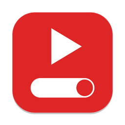

YouTube Switch
Turn YouTube on and off for everyone on this Mac, with one click.
How do I stop my kid from watching YouTube on the computer instead of doing their homework?
Install this on the Mac. Click Block before homework. Click Allow when they're done. Your kid can't undo it from their account. Screen Time can block YouTube too, but it's buried in Settings, set up one kid at a time, and a pain to switch back.
Download for MacmacOS only. About 100 KB. It's free and open source. See the code on GitHub.
“I’m amazed that this did not exist already. Very helpful for anyone dealing with YouTube and other Internet junkies.”
Kal
Install
- Log in to your own account on the Mac and download the file above.
- Open Downloads and double-click
YouTube-Switch.zipto unzip it. - Drag YouTube Switch to your Desktop or your home folder. Don't put it in the main Applications folder. Every account can see that one.
- Approve it with macOS, once:
- Double-click YouTube Switch. macOS says it was “Not Opened.” Click Done.
- Open System Settings → Privacy & Security.
- Scroll to the bottom. Next to “YouTube Switch was blocked…” click Open Anyway and enter your password.
- Click Open Anyway once more in the box that pops up.
Use it
- Double-click YouTube Switch. It shows whether YouTube is BLOCKED or ALLOWED.
- Click Block YouTube or Allow YouTube, then enter your Mac password.
- The window stays open, so you can switch back and forth. Your password is remembered for a few minutes. Click Quit when you're done.
Blocking also closes Chrome in your child's account, so the block applies as soon as Chrome is reopened.
Good to know
- The block applies to every account on this Mac, including yours.
- It only covers this Mac. Phones, iPads and TVs need their own settings, such as Screen Time.
- It doesn't stop a VPN.
- The first time it runs, it saves a backup of your settings file at
/etc/hosts.youtube-switch.bak. - To remove it: open it, choose Allow YouTube, quit, then drag the app to the Trash.